Case study · Mobile app · Pilot
SlaapCampus
A sleep app for mbo students, made with students, not for them.
SlaapCampus helps students sleep better. You track your sleep and screen time and earn points. Night mode or a screen break blocks distracting apps for a while, or even your whole phone.
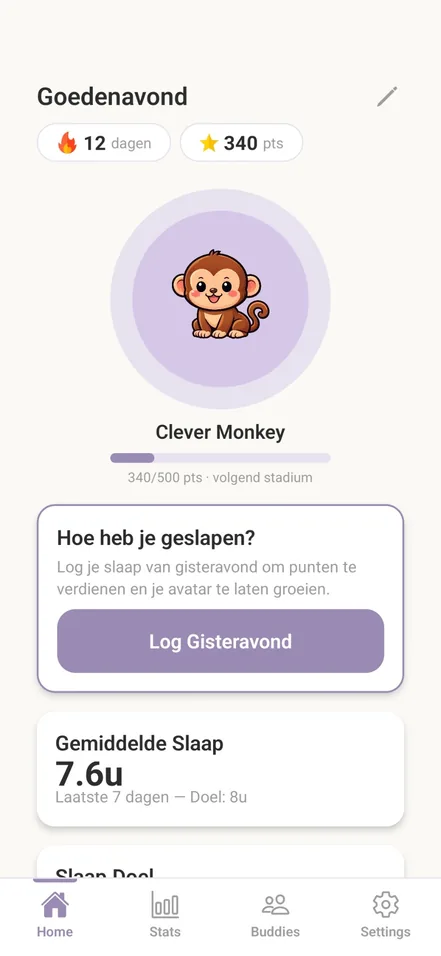
The research
How do you improve the (mental) health of mbo students?
Sifra Swagerman has been working on that question for a while, and lately I got to do my bit too.
Her research at the Open Universiteit is called LEMBO: Leefstijl En Mentaal welbevinden in het BeroepsOnderwijs, lifestyle and mental wellbeing in vocational education. Students at Dutch vocational schools (mbo), aged 16 and up, fill in a questionnaire about how they live and how they feel.
Within her research, the idea came up to make an app not for students, but with them.
From idea to app
Nursing students came up with the ideas. We turned them into an app.
-
01
The concepts
Nursing students came up with different app concepts and designed them.
- Screenbreak
- Nachtwacht
- Ontbijt koning
- and more
-
02
The apps
We, the software development students, turned those designs into working apps.
-
03
The pick
Out of those, our app was picked as the best.
SlaapCampus
Design → build
The nursing students made the first design. The app we built kept their little mouse that grows as you go, in a lighter look.
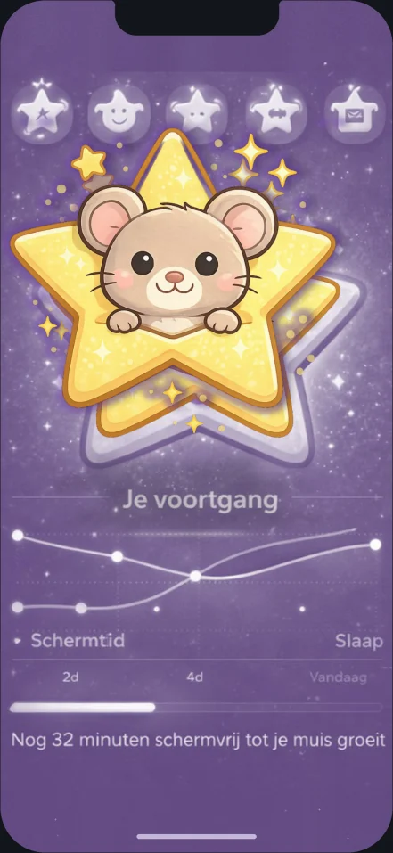
their design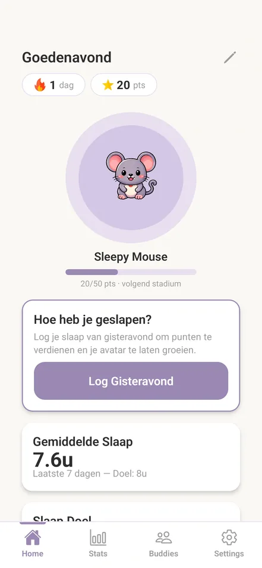
the built appInside the app
Encourage, don’t punish.
The nursing students’ design asked for a calm, motivating app for students who want to sleep earlier and longer. Clear limits, but never harsh. The built app keeps that tone: you earn points, your avatar grows, and you decide how strict bedtime gets.
Less distraction
At bedtime the apps you pick are blocked, gently or strictly. A screen break locks your phone for a while.
Visible goals
Your sleep goal, your average and your streak, right on the home screen.
Soft rewards
Points, an avatar that grows from a mouse into a giraffe, and themes to unlock.
The screens below come from the built app on Android, in Dutch. They show a demo account with demo data.
Getting started · Start je slaaptraject
Set up in a minute
The welcome screen says setting up takes a minute. Then come four short questions: how old you are, how many hours of sleep you want (experts recommend 7 to 9), when you want to go to sleep, and which apps keep you up at night.
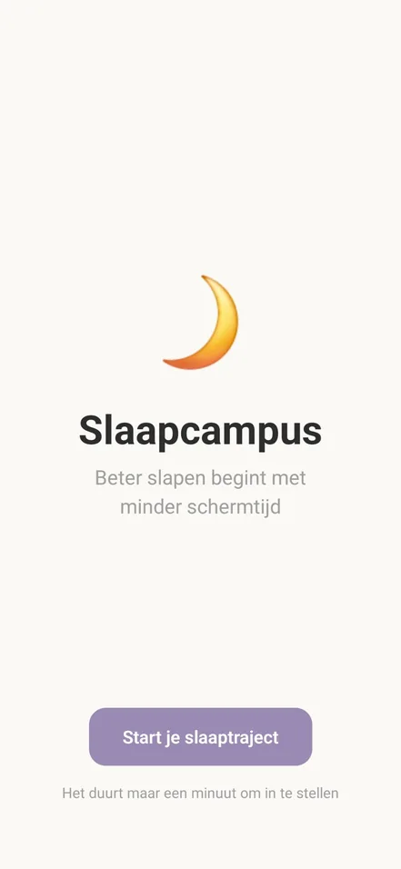
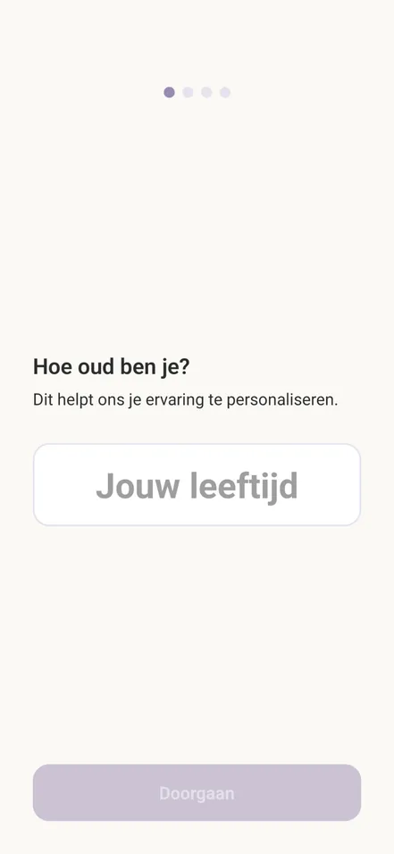
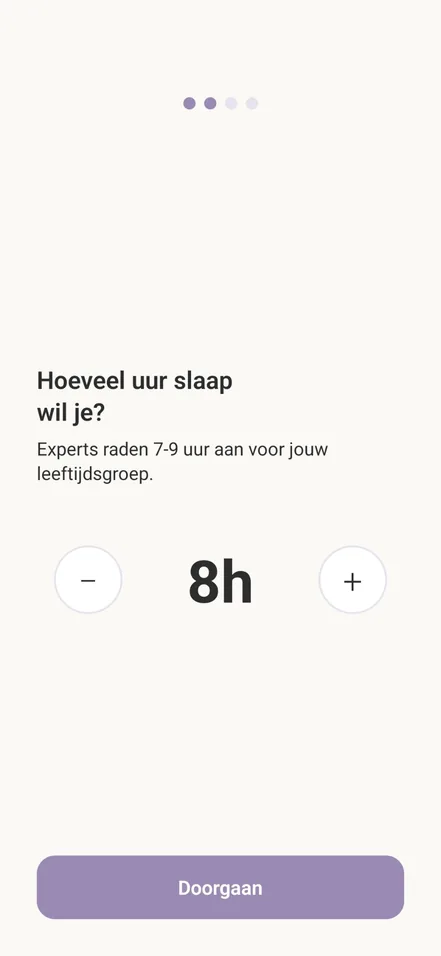
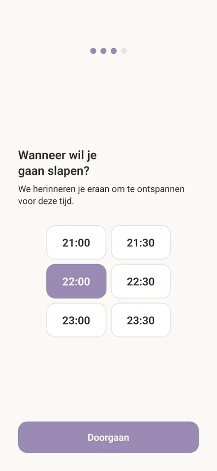
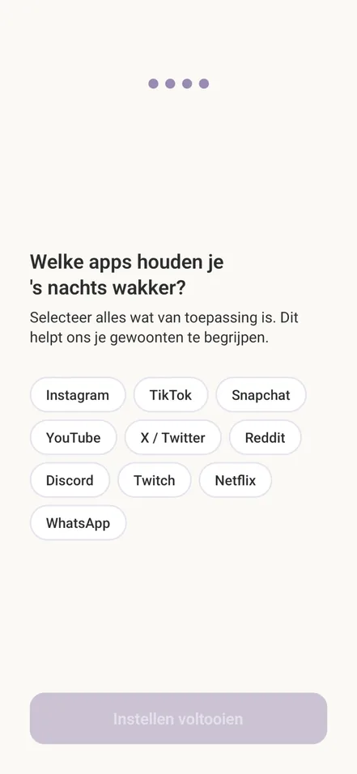
Home · Hoe heb je geslapen?
Log the night, grow an avatar
Until you’ve logged, the home screen asks one question: “Hoe heb je geslapen?”, how did you sleep? You fill in how long you slept and your screen time that evening.
Logging earns points and keeps your streak going. With enough points your avatar moves on to its next stage, from Sleepy Mouse all the way to Mighty Giraffe.
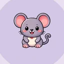
Sleepy Mousestart- Cozy Cat50 pts
- Loyal Dog150 pts
- Clever Monkey300 pts
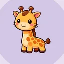
Mighty Giraffe500 pts
Bedtime · Bedtijd
A bedtime that blocks for you
In the settings you set a sleep goal (the app recommends 7 to 9 hours), a bedtime and a wake-up time. At bedtime your phone blocks automatically, and at wake-up time the block stops on its own.
What that block feels like is up to you: a gentle question, or a phone that stays locked until morning.
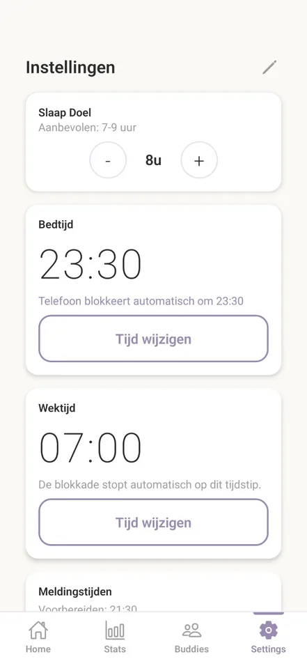
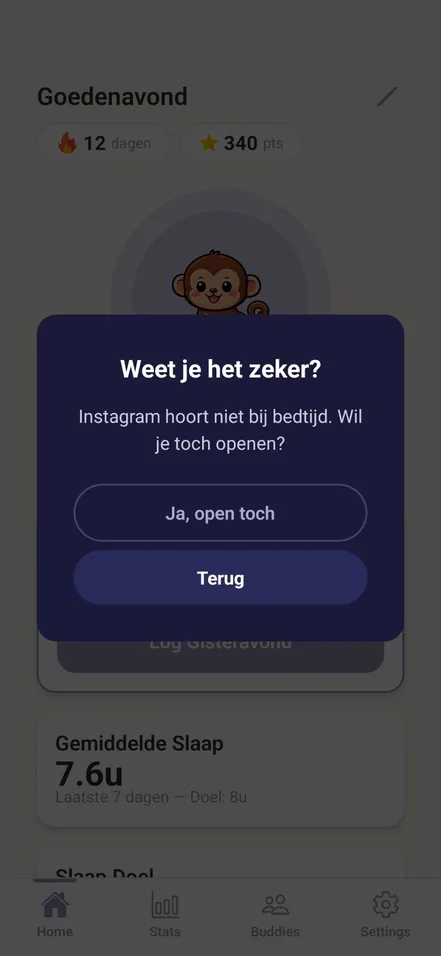
Soft A nudge
The app asks first: “Weet je het zeker?” Instagram doesn’t belong at bedtime. You can still open it, or go back.
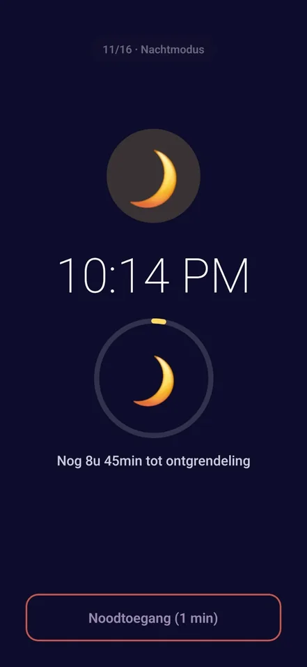
Strict Locked until morning
Night mode locks the phone and shows how long until it unlocks. If you really need it, there’s one minute of emergency access.
Stats · Statistieken
Sleep and screen time, side by side
Statistics has two tabs, sleep and screen time, over the last 7, 14 or 30 days. Below the chart: your average sleep and screen time, this week against last week, and your best night.
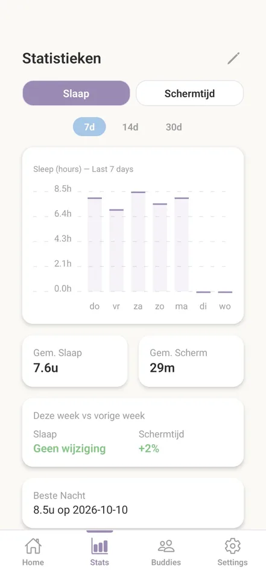
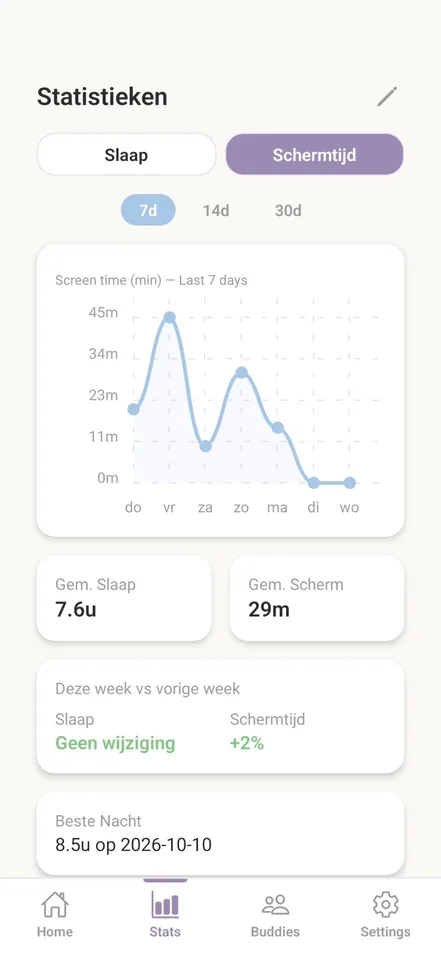
Screen break · Schermpauze
A break from your phone
From the home screen you can start a screen break, and your phone locks for a while. The lock screen keeps it short: the time, when it unlocks and how long is left.
The apps you allow, like Phone and Spotify, still open. If you really need it, you can unlock for one minute, and in an emergency you can switch the block off.
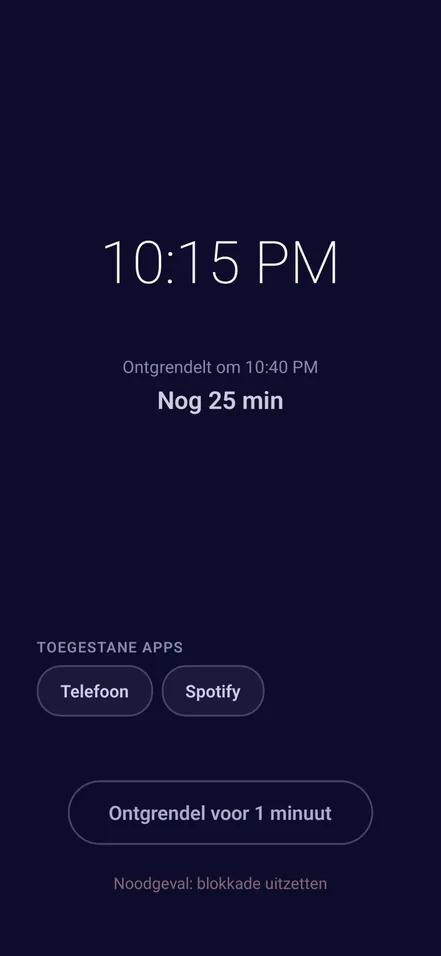
Friends and themes · Buddies, Thema Winkel
Friends, and something to spend points on
In Buddies you start a group with friends. The group has a leaderboard with everyone’s streak, average sleep and points, an invite code to share, and you can send each other a bit of motivation.
The theme shop has light, dark and a high-contrast theme for colour blindness. Points buy more, like Nachtelijke Hemel (night sky) and Bos (forest).
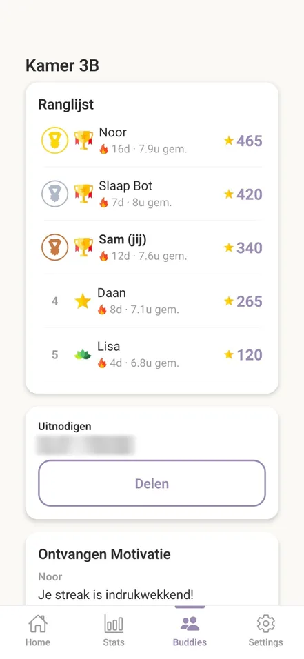
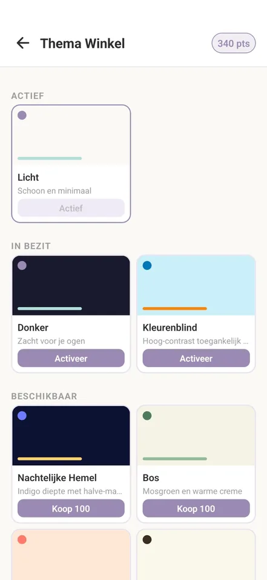
How it’s built
React Native, with a small data model underneath.
Together with Max Klant I built the app in React Native with Expo. The data behind it is simple: a student, their sleep goal, and three logs that fill up over time.
- type
- Android app
- year
- 2026
- built with
- Max Klant
- context
- Sifra Swagerman’s research at the Open Universiteit
- status
- LEMBO NXT pilot, first test phase
STUDENTthe account
- idPK
- aangemaakt_op
hasone
SLAAPDOELsleep goal
- idPK
- student_idFK
- gewenste_slaaptijd
- gewenste_wektijd
- avondmodus_start
- max_schermtijd_minuten
- actief
When you want to sleep and wake up, when evening mode starts, and your screen-time limit.
logsmany
SLAAP_LOGsleep log
- idPK
- student_idFK
- datum
- slaaptijd
- wektijd
- slaapduur_minuten
Per night: when you fell asleep, when you woke up, and how long you slept.
logsmany
SCHERMTIJD_LOGscreen-time log
- idPK
- student_idFK
- datum
- start_monitoring
- eind_monitoring
- schermtijd_minuten
- doel_behaald
Per day: when tracking started and stopped, the minutes of screen time, and whether you hit your goal.
earnsmany
PUNTEN_LOGpoints log
- idPK
- student_idFK
- punten
- reden
- datum
- aangemaakt_op
Every time you earn points: how many, the reason, and the date.
Guest lessons and the pilot
Into the classroom.
In September 2026 we gave guest lessons at several programmes at Aventus. We presented the app and looked for testers, who’ll use it over the coming weeks.
This first test phase is part of the LEMBO NXT pilot study, which evaluates SlaapCampus: an app made together with mbo students to help them sleep better and spend less time on screens.
It was great to see students install the app and try it right there. Their feedback will help us make the app even better. Now it’s time to sit back and let the data come in.
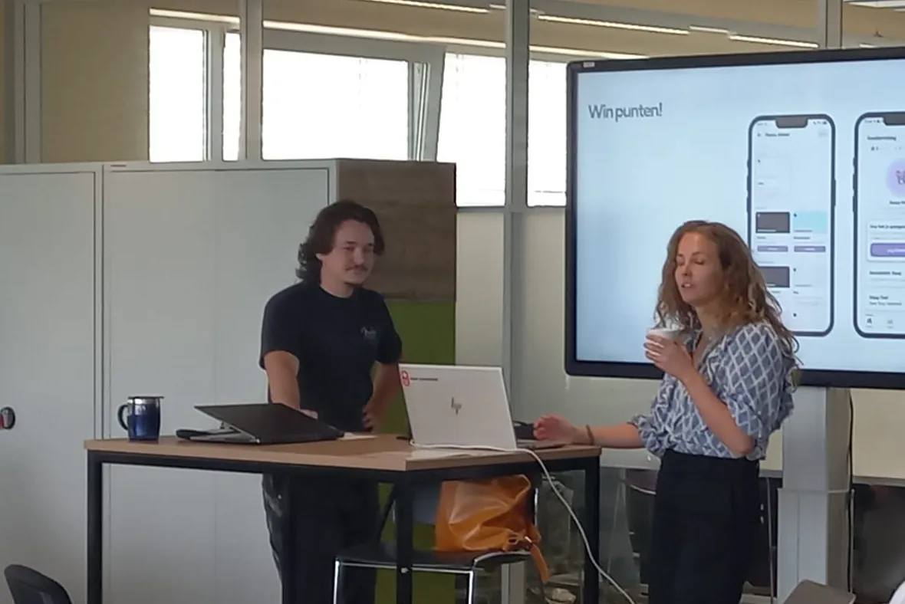
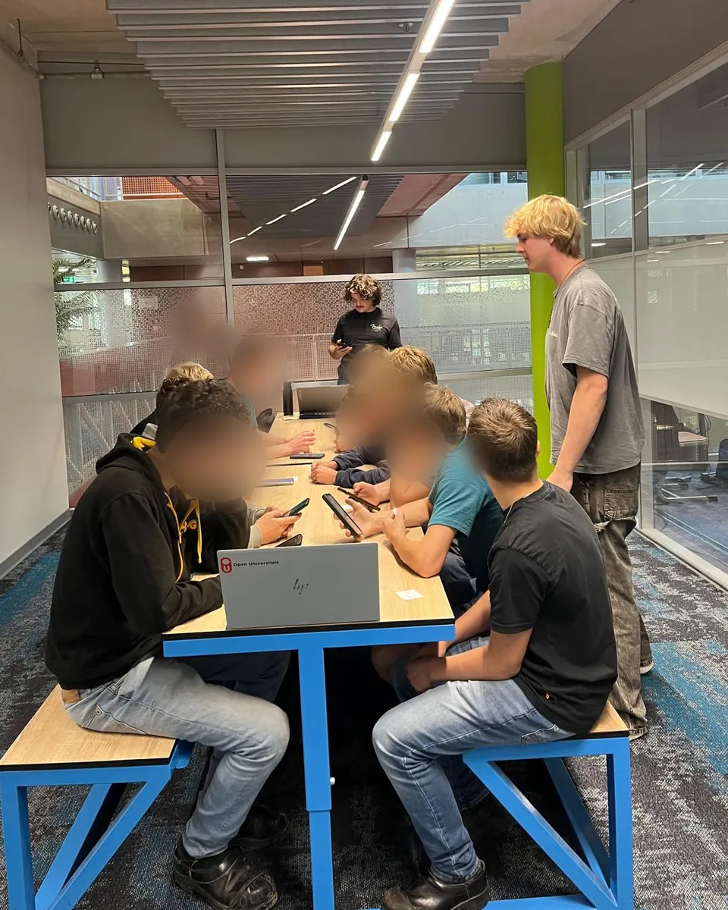
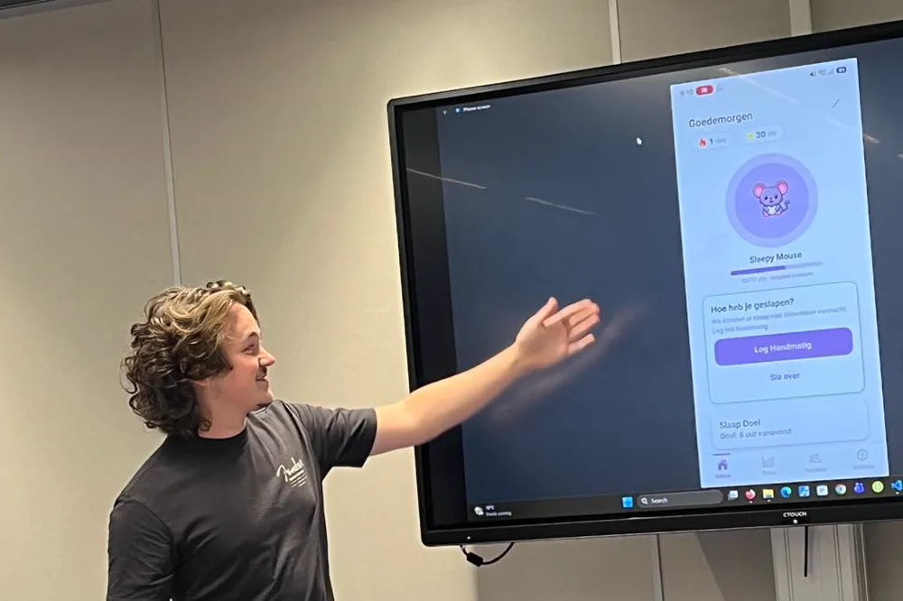
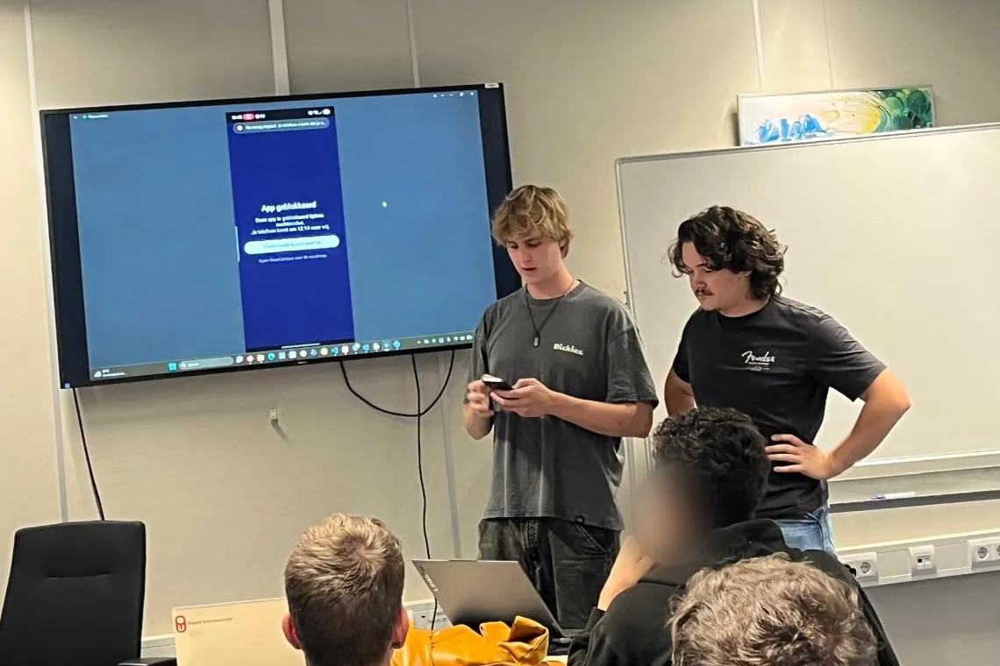
Students’ faces are blurred for their privacy.
A guest lesson, step by step
- The researchHow students think an unhealthy lifestyle affects how they feel, what they want to change and can change themselves, and how to build an app together with them.
- Consent firstTesters had to be 18 or older. It’s anonymous, you can always ask questions, you never have to answer, and you can stop at any time.
- A questionnaireThe first measurement, T1.
- Installing the appThe app runs on Android, so Android users installed it with a QR code and a handout.
- A walkthroughThe app’s features, one by one, and joining a group in the app.
- Two teamsAndroid users tested the app (Team Testen). iPhone users joined Team Onderzoek: a post-it and card exercise about what would help them sleep better, so we still learned from them.
Where SlaapCampus is now
- Concepts and designs by nursing students
- Built into apps by software development students
- SlaapCampus picked as the best
- Built in React Native (Expo)
- Guest lessons at Aventus to find testersSeptember 2026
- LEMBO NXT pilot study, first test phaserunning now
- Resultsto follow
Curious what the pilot will teach us? Me too.
PowerPlan(t) came from the same project, one round later. That one wasn’t part of the research.